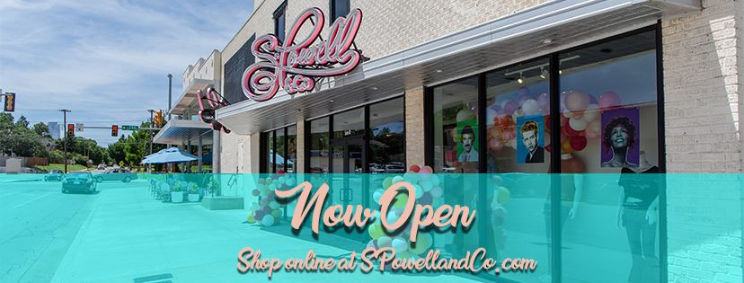

6

Logos For Integris
Huntr was a startup information security company that offered a multi-component set of solutions to help systems administrators analyze and protect their network as well as respond to threats and vulnerabilities. Their primary logo consisted of a white tiger stylized using only harsh angles over a shield shape to symbolize a strong animal on the hunt.
Their solutions were offered in multiple optional components that can either be purchased all at once as a full suite or individually to complement an existing infrastructure so that the admin could keep their favorite tools and just use the available APIs to get everything working together. Each of those components however needed a separate logo to fit what they did as a part of the whole.
Huntr offered not just the network security software but also its own hardware device which could be placed first in line on a network just before the firewall to act as a monitor of all inbound and outbound traffic. The above logo was used on marketing slicks where hardware offerings were discussed.
Logos were then needed for each of the seven individual software offerings within the suite which ranged from monitoring to detection, response, research, knowledge gathering, documentation management, tracking the usage of security certificates, file scanning, and log databases.
More information about Huntr's software suite can be found on Huntr.com.
S. Powell & Co. is an upscale clothing boutique located in the trendy Uptown portion of OKC. Their styles range from tasteful and chic to pop art sensibilities with brignt colors. A simple logo was used as the brand base to appear in most circumstances (the header of their website, the stencil base for their shopping bags and price tags, etc.), but as the storefront features two large pink neon signs at the entrance another brighter, bolder version was also created for use on any louder media such as posters, social media graphics, and so forth.
Integris's Informatics Technology department needed internal logos for their services and letterhead. The below proposals started complex but grew more simple as feedback was given. The final logos were meant to be vaguely shaped like a full brain with lobes and stem but still simple enough that it would translate well to being used on stationery in black and white. The other logos were kept around as clipart in presentations.
Integris's Health Services team maintained a service called Sentinel Events and Alerts Log, or "SEAL", and needed a logo for their web app. They already had a concept but did not have a digital version.